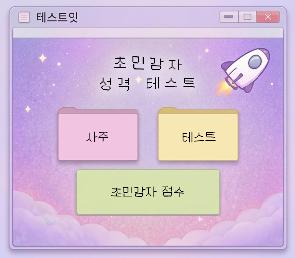

테스트잇
성격
얼굴
그외
사주
🔍
http://test-it.co.kr/test373
🔒

시작하기
정보 입력
정확한 분석을 위해 생년월일을 입력해주세요.
달력 기준
양력
음력
생년월일
태어난 시간 (모르면 모름 선택)
모름
자시 (23:30 ~ 01:29)
축시 (01:30 ~ 03:29)
인시 (03:30 ~ 05:29)
묘시 (05:30 ~ 07:29)
진시 (07:30 ~ 09:29)
사시 (09:30 ~ 11:29)
오시 (11:30 ~ 13:29)
미시 (13:30 ~ 15:29)
신시 (15:30 ~ 17:29)
유시 (17:30 ~ 19:29)
술시 (19:30 ~ 21:29)
해시 (21:30 ~ 23:29)
다음
1 / 10
질문 텍스트
테스트잇 초민감자 성격 테스트
결과 타입
초민감자 지수
0%
사주
0%
테스트
0%
사주 분석
사주 요약 설명
테스트 분석
테스트 요약 설명
종합 분석
종합 요약 설명이 들어갑니다.
핵심 키워드
결과 이미지 저장하기
다시 해보기
다른 테스트 해보기
테스트 공유하기
이미지를 꾹 눌러서 저장해주세요!
닫기